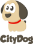

<!--
The `dogzone-map` element renders a Google Map with all Viennese dogzones plus recommended  and reviewed dogfood stores.

<b>Example</b>:

    <style>
      dogzone-map {
        display: block;
        height: 600px;
      }
    </style>
    <dogzone-map></dogzone-map>

<b>Example</b> - hide Shops from the map:

	<dogzone-map hideShops="true"></dogzone-map>

<b>Example</b>:

    <dogzone-map disableDefaultUI="true"></dogzone-map>    

@element dogzone-map
@homepage https://github.com/citydogweb/dogzone-map
-->

	<link rel="import" href="../polymer/polymer.html">
	<link rel="import" href="../google-map/google-map.html">
	<link rel="import" href="../core-ajax/core-ajax.html">
	<link rel="import" href="../google-sheets/google-sheets.html">

	<polymer-element name="dogzone-map" attributes="hideShops disableDefaultUI hideLogo" noscript>

	<template>
	   <style>
	    :host {
	        position: absolute;
	        width: 100%;
	        height: 100%;
	        /*box-sizing: border-box;*/
	    }	 
	       #google_map {
	        width: 100%;
	        height: 100%;
	        display: block;
	        left: 0px;
	        top: 0px;
	        position: absolute;
	      }	      
	       #citydog_logo {
	        position: absolute;
	        right: 5px;
	        bottom: 10px;	
	        
	      }
	     </style>	

	   <core-ajax auto url="http://data.wien.gv.at/daten/geo/" params='{"service":"WFS", "request":"getFeature", "version":"1.1.0", "typeName":"ogdwien:HUNDEZONEOGD", "srsName":"EPSG:4326", "outputFormat":"json"}' handleAs="json" response="{{parks}}"></core-ajax>

	  <google-sheets id="sheet" key="0Ak8F46UHJBvpdFczTTVlNXVYS25IYXIwenJ2SFRPbmc" gid="0" rows="{{rows}}" published></google-sheets>
	     	<google-map id="google_map" disableDefaultUI={{disableDefaultUI}} fitToMarkers>
	      		<template repeat="{{parks.features}}">
	                    <google-map-marker latitude="{{geometry.coordinates[1]}}" longitude="{{geometry.coordinates[0]}}" title="{{properties.PARK}} : {{properties.FLAECHE}}" icon="https://raw.githubusercontent.com/citydogweb/dogzone-map/master/dog_map_icon.png">
	                    <p horizontal layout center>
	                    	
	                    	<b>{{properties.PARK}}</b>
	                    </p>
	                    <div style="margin-left: 16px; margin-bottom: 16px;">
	                    <li>
	                    	Fläche: {{properties.FLAECHE}}
	                    </li>                    
	                    <li>
	                      Typ: {{properties.TYP}}
	                    </li>                    
	                    <li>
	                      Einfriedung: {{properties.EINFRIEDUNG}}
	                    </li>                    
	                    </div>
	                    </google-map-marker>
	        	</template>
	        <template repeat="{{row in rows}}">
	  		       		<google-map-marker hidden?="{{hideShops}}" latitude="{{row.gsx$lat.$t}}" longitude="{{row.gsx$lng.$t}}" title="{{row.gsx$name.$t}}" icon="https://raw.githubusercontent.com/citydogweb/dogzone-map/master/shop.png">
     		            <b>{{row.gsx$name.$t}}</b><br>
     		            {{row.gsx$address.$t}}<br>
     		            {{row.gsx$zip.$t}} {{row.gsx$city.$t}}<br>
     		            <a href="{{row.gsx$web.$t}}">{{row.gsx$web.$t}}</a><br>	             	
	        		</google-map-marker>				
	        </template>	
	    	</google-map>		
		  	<a id="citydog_logo" href="http://citydog.at" hidden?="{{hideLogo}}"></a>
	</template>

	</polymer-element>

<script>

  Polymer('dogzone-map', {

 /**
     * If set, removes the map's default UI controls.
     *
     * @attribute disableDefaultUI
     * @type boolean
     * @default false
     */
    disableDefaultUI: false,

     /**
     * If set, removes the featured and reviewed dogfood shops from map.
     *
     * @attribute hideShops
     * @type boolean
     * @default false
     */
    hideShops: false,

     /**
     * If set, removes the citydog logo from the bottom right corner.
     *
     * @attribute hideLogo
     * @type boolean
     * @default false
     */
    hideLogo: false,


	}};
 </script>
